На следующей странице можно опуститься вниз и нажать skip this step
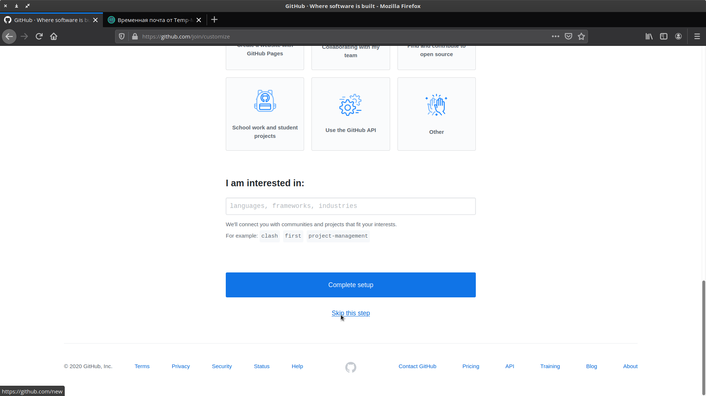
Не забудьте подтвердить свой e-mail! Github отправил вам письмо
Далее, нам предлагают создать первый репозиторий, но пока нам это делать на нужно.
Нажимаем на аватарку в верхнем правом углу, и чуть ниже на имя пользователя,
попадаем на главную страницу нашего аккаунта.
Регистрация закончена.
Конфигурация Git
Cконфигурируем Git на компьютере.
Идем в терминал и пишем:
git config --global user.name “АККАУНТ GITHUB” username в
кавычках!
git config --global user.email ВАШ EMAIL email без
кавычек!
Можно также добавить несколько алиасов. Это сокращения команд Git. Это по
желанию
git config --global alias.ci commit
git config --global alias.st status
Теперь вместо git commit можно писать сокращенно git ci,
а вместо git status - git st.
Удобно!
Форк и клонирование репозитория
Возвращаемся на сайт Github
В поле поиска Github (верхний левый угол) вводим papatomatoe и ищем
по всему Github.
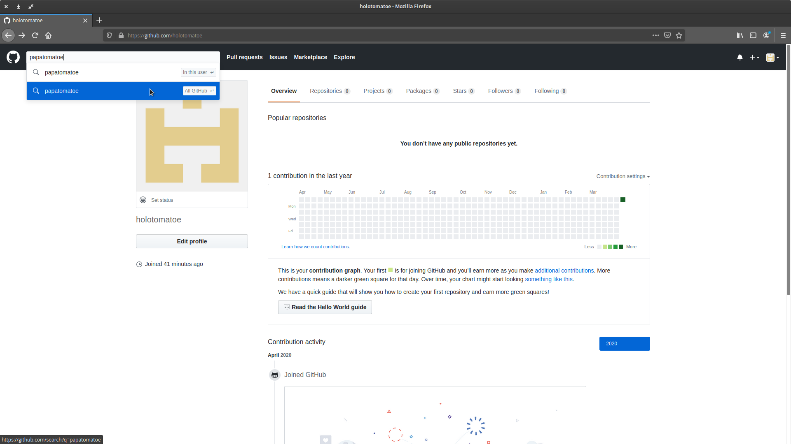
Находим юзера с именем papatomatoe и переходим в его аккаунт
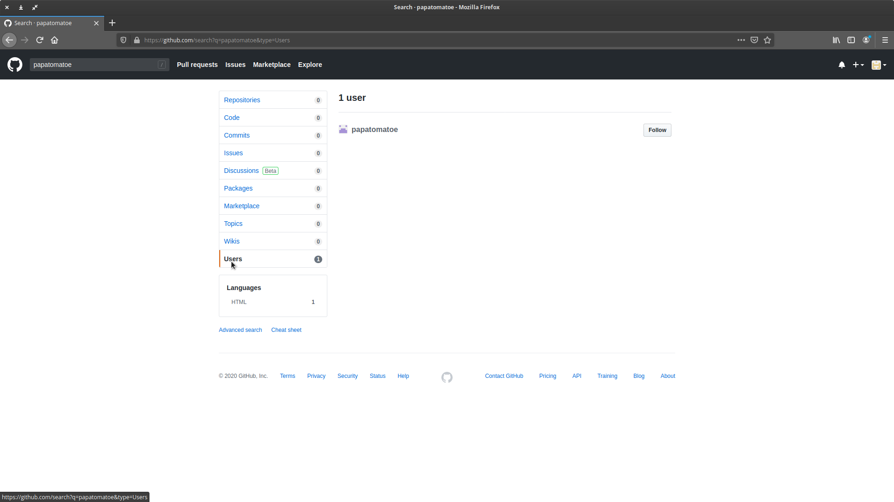
Здесь видим вверху раздел Popular repositories (Или жмем на ссылку выше
Repositories). Затем, нажимаем на Cruises.
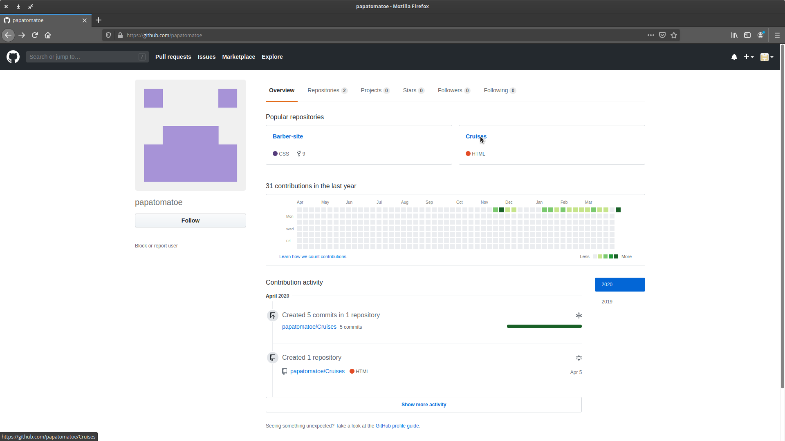
Здесь жмем на кнопку Fork.
Github копирует репозиторий и перенаправляет нас в копию, которая теперь
в нашем аккаунте.
Далее, надо склонировать репозиторий на компьютер. Нажимаем зеленую кнопку
Clone or download, а затем, на маленькую серую кнопку справа от адреса, так мы копируем ссылку в
буфер
обмена.
Далее, где-нибудь (в документах или на рабочем столе) создаем новую папку, я назову
ее Second_project, заходим в нее и жмем правой кнопкой мыши по
свободному полю в этой папки, во
всплывающем меню выбираем пункт Terminal. (Если такого пункта меню нет, посмотри это видео)
Папка открывается в терминале. Можно вывести путь командой pwd чтобы
убедится, что мы точно в правильном месте.
Ок! Теперь пишем git clone и вставляем адрес, который мы скопировали
из Github, нажимаем Enter.
Репозиторый будет склонирован на компьютер. Команодой ls проверим так
ли это.
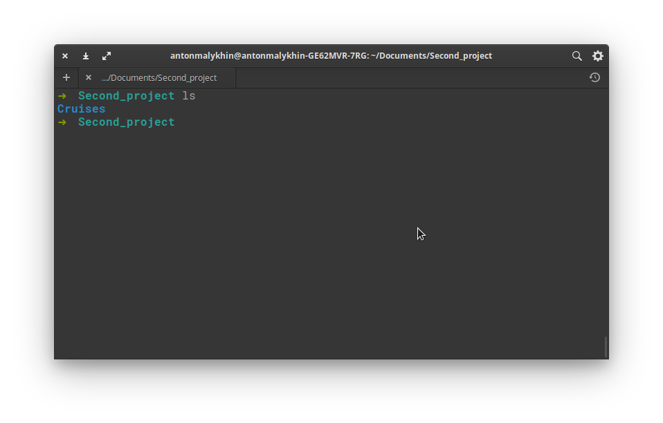
Появилась папка с проектом Cruises. Заходи в нее cd Cruises
Далее пишем git remote -v
Так, посмотрим список удаленных репозиториев. Пока здесь только один, наш, который по факту работает как на прием
так и на отправку (fetch и push).
Добавим учительский репозиторий. Для этого в браузере нажмем на ссылку
papatomatoe/Cruises, под названием нашего репозитория
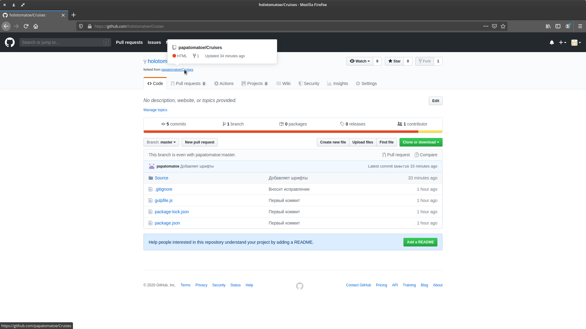
Перейдем и скопируем из поисковой строки адрес
https://github.com/papatomatoe/Cruises
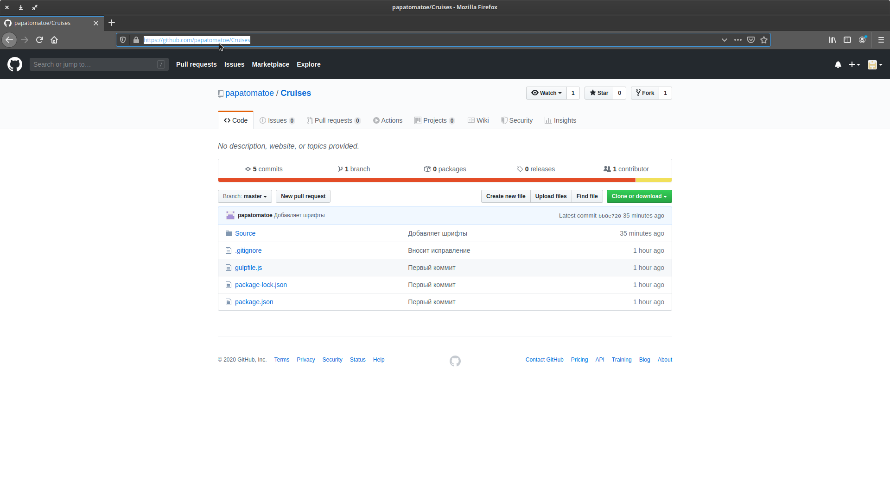
Возвращаемся в терминал, пишем:
git remote add main https://github.com/papatomatoe/Cruises
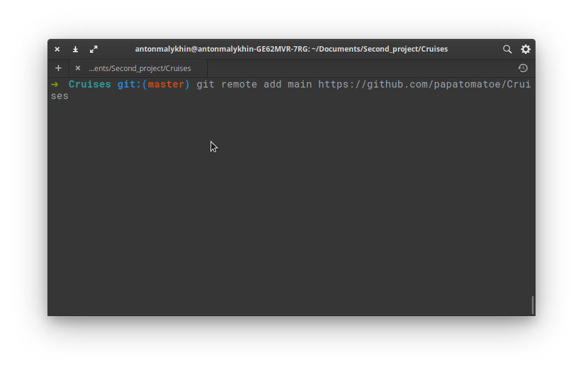
Мы добавили учительский репозиторий, оттуда можно будет забирать актуальные
изменения проекта.
Проверим все ли добавилось, пишем опять: git remote -v
Видим уже четыре строки: две main и две origin.
Отлично! Продолжаем!
Установка зависимостей
В нашем проекте есть файл packages.json в
котором прописаны все зависимости. И мы можем смело их установить. Набираем npm i
Валидация index.html
Да, я совсем забыл в прошлый раз проверить наш код, давайте это сделаем! Идем на
сайт валидатора html, и тут
средняя вкладка! Кнопка Обзор...
Выбираем index.html, нажимаем на кнопку Check
Есть три ошибки! Пойдем исправлять!
Дублируется атрибут href, давайте удалим лишнее и сохраним.
Еще раз загрузим index.html и проверяем! Вот
теперь все хорошо!
Коммит и Пуш
Далее закоммитем наши изменения и сохраним в удаленной репозиторий.
Идем в консоль и пишем: git status Видим один измененный файл Source/index.html
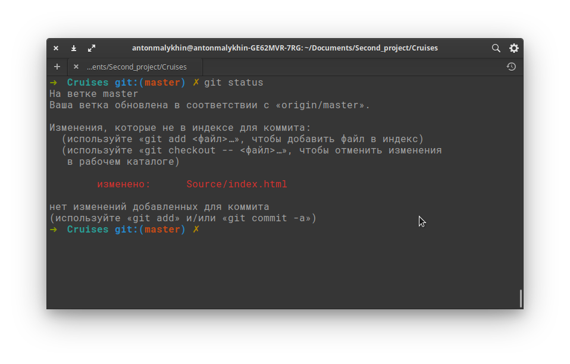
Теперь git add Source/index.html и снова git status
Видим, что index.html проиндексирован.
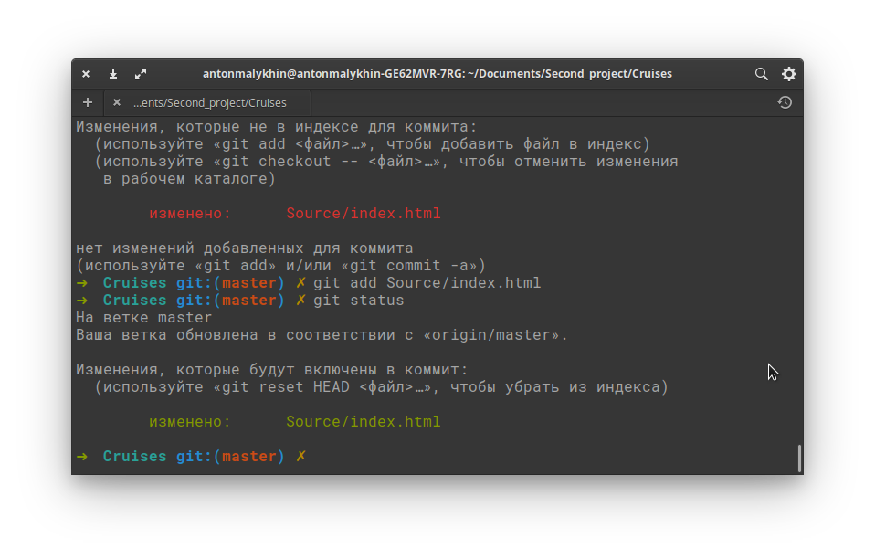
Далее git commit -m “Исправляет ошибки”
И теперь можно запушить наши изменения: git push origin master
Возможно придется ввести username и password от аккаунта
Github. (Учтите количество символов при вводе пароля не показывается, вообще ничего не
показывается, поэтому надо быть внимательнее!)
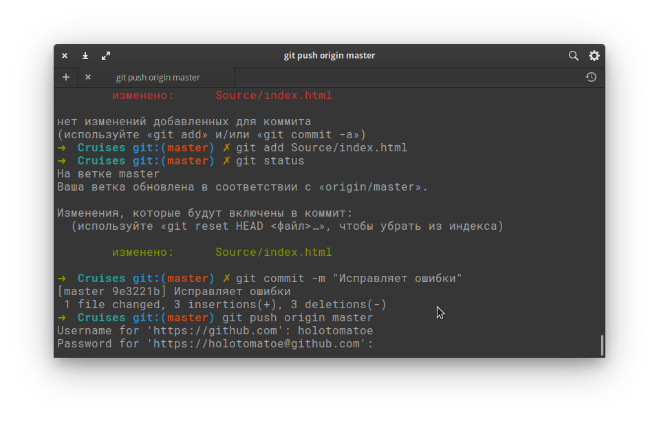
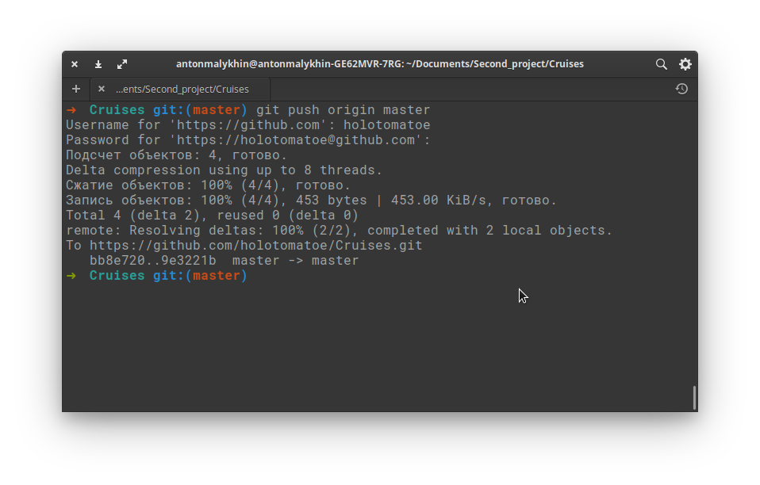
Можно пойти в Github и удостовериться, что все отправлено.
Нажимаем на ссылку 6 commits
И видим, что наш коммит успешно добавлен в ветку master